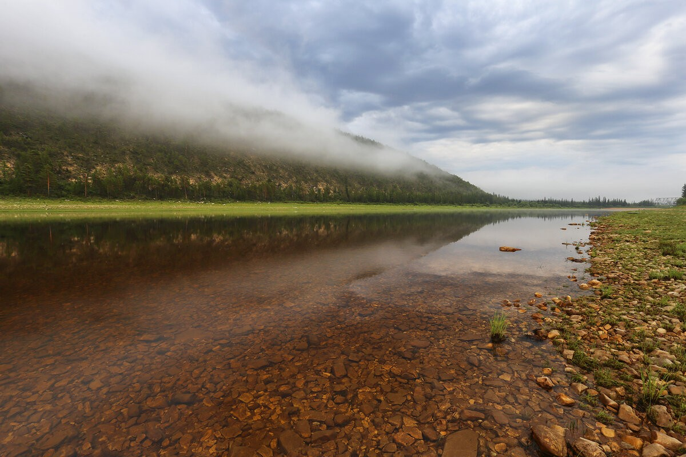

Река Амга
Амга — река в Якутии, левый, самый длинный приток Алдана. Длина реки — 1462 км, площадь водосборного бассейна — 69 300 км². Амга берёт начало с Алданского нагорья, где образует узкую глубокую долину с каменистым руслом. Ниже села Тёгюльте-Тёрдё долина расширяется, течение реки приобретает спокойный характер. Река протекает по территории шести районов Якутии: Олёкминского, Алданского, Амгинского, Чурапчинского, Таттинского и Томпонского. В низовье Амга судоходна.